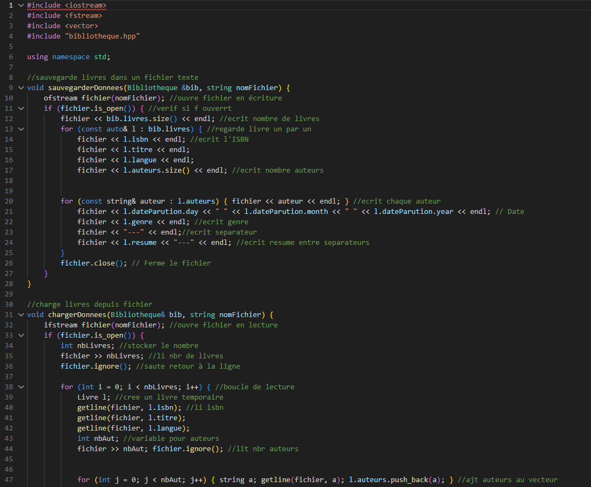
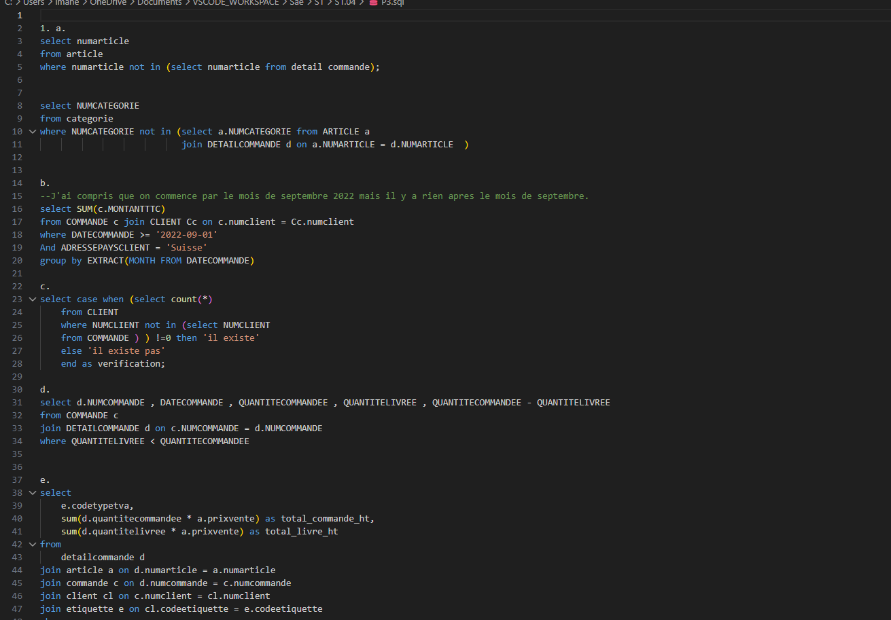
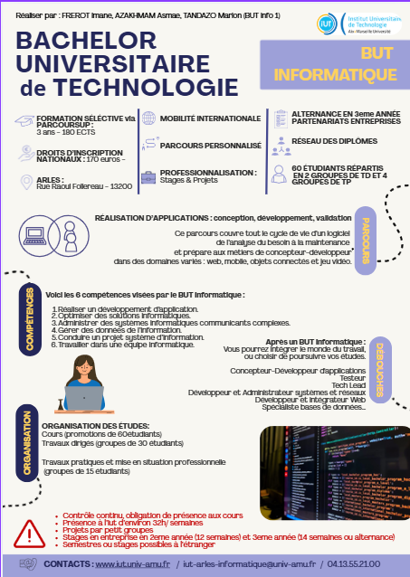

SAÉ S1.01 (C++)
- J'ai conçu une bibliothèque de données.
- J'ai organisé mon développement avec des fichiers .hpp et .cpp bien distincts.
- J'ai créé des constructeurs pour initialiser mes objets de manière sécurisée.
- J'ai appris à manipuler des algorithmes complexes pour traiter les informations efficacement.

SAÉ S1.02 (Comparaison d'algorithmes)
- J'ai implémenté l'algorithme du tri à bulles.
- J'ai programmé l'algorithme du tri par insertion.
- J'ai automatisé la compilation avec un script Shell.
- J'ai testé l'efficacité sur plusieurs fichiers (.data).

SAÉ S1.04 (Création de BDD)
- Analyse d'un cahier des charges pour concevoir le diagramme de classes d'une base de données relationnelle.
- Manipulation de requêtes SQL complexes pour extraire et vérifier la qualité des informations de la base.
- Apprentissage à utiliser des jointures et des fonctions d'agrégation pour répondre aux besoins du client.
- Création de scripts d'insertion et de mise à jour pour gérer les stocks et les commandes de l'entreprise.
- Structuration de mon travail pour assurer l'intégrité des données tout au long du projet.

SAÉ S1.05 (Recueil de besoins & Com)
- Conception et développement d'un site web complet présentant l'IUT d'Arles en utilisant HTML5 et CSS3.
- Réalisation d'un flyer publicitaire professionnel sur Canva en respectant une charte graphique précise.
- Apprentissage à recueillir et analyser les besoins d'un client pour proposer des solutions visuelles adaptées.
- Structuration de l'information de manière ergonomique pour faciliter la navigation des futurs étudiants sur le site.
- Travail sur l'identité visuelle pour rendre la communication de l'établissement plus moderne et attractive.